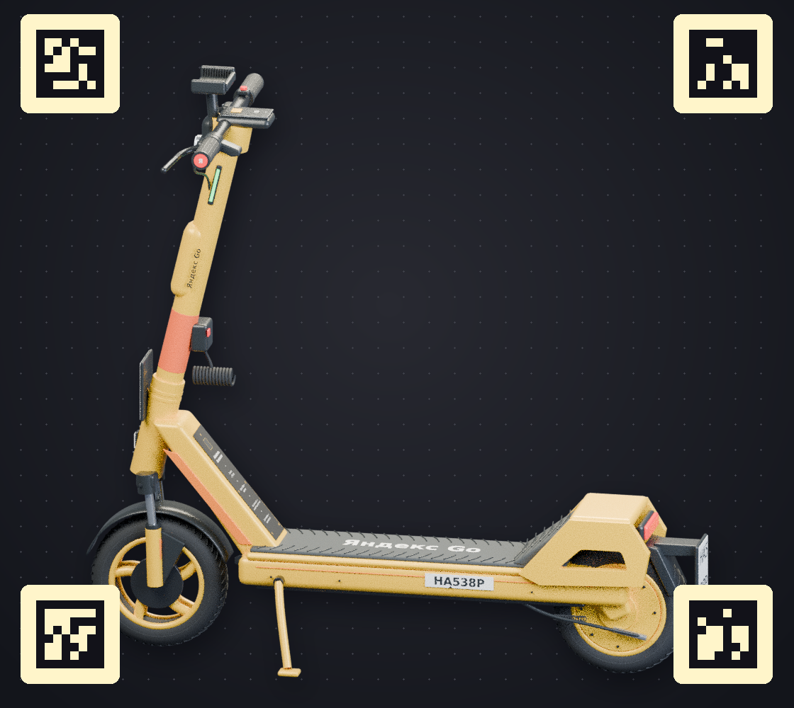

AR-обучение
Самокат
за 8 шагов
Наведи камеру телефона на самокат на экране ноутбука. Подсказки появятся прямо на нужных деталях.

Открыть живую 3D-модельAR-обучение
Наведи камеру телефона на самокат на экране ноутбука. Подсказки появятся прямо на нужных деталях.

Открыть живую 3D-модель